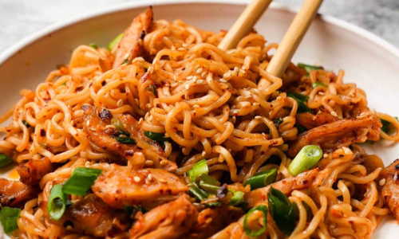

Asian Garlic Noodles
Recipe Credit:Damn Delicious
Easy peasy Asian noodle stir-fry using pantry ingredients that you already have on hand.
Quick, no-fuss, and made in less than 30 minutes!
Ingredients
- 8 ounces spaghetti
- 12 oz medium shrimp (peeled and deveined)
- 1 Tbsp olive oil
- 8 oz cremini mushrooms (sliced)
- 1 red bell pepper (diced)
- 2 zucchini (diced)
- 1 carrot (grated)
- 2 Tbsp chopped fresh cilantro
For the Sauce
- 1/3 cup soy sauce
- 3 cloves garlic (minced)
- 2 Tbsp brown sugar (packed)
- 1 Tbsp sambal oelek* (or more to taste)
- 1 Tbsp oyster sauce
- 1 Tbsp freshly grated ginger
- 1 tsp sesame oil
Directions
- In a large pot of boiling salted water, cook pasta according to package instructions,
drain well.
- Heat olive oil in a large cast iron skillet over medium high heat. Add shrimp and 2 Tbsp
soy sauce mixture, and cook, stirring occasionally, until pink. About 2-3 minutes. Set
aside.
- Add mushrooms, bell pepper, zucchini, and carrot to the skillet. Cook, stirring
frequently, until tender, about 3-4 minutes. Stir in spaghetti, shrimp, and remaining soy
sauce mixture until well combined, about 2-3 minutes.
- Serve immediately, garnish with cilantro, if desired.
For the Sauce
- In a small bowl, whisk together soy sauce, garlic, brown sugar, sambal oelek, oyster
sauce, ginger, and sesame oil. Set aside.
Notes
*Sriracha can be substitued